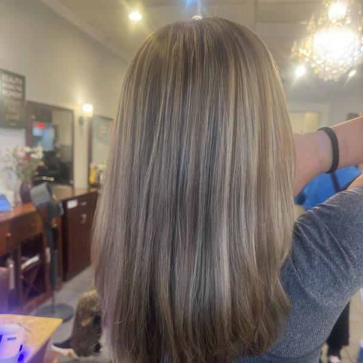

The short answer: a keratin or smoothing service can make sense if you are tired of spending humid summer mornings fighting frizz and you want an easier, smoother finish. It is not automatically right for every hair history, and it should not be chosen only because a friend had a good result. Start with the outcome you want, then let the consultation decide whether your hair is ready for the process.
What a smoothing service can and cannot do
Many clients choose keratin because they want less frizz, a glossier finish, and less time spent blow-drying or flat-ironing. Depending on the service and your starting texture, a smoothing treatment may soften the hair, loosen the appearance of a wave, or make the finish more cooperative when the air is humid.
It is important to keep expectations realistic. A smoothing service does not create the same result on every head of hair, and it does not replace a healthy-hair plan. If your goal is to keep your curl pattern but reduce frizz, say that clearly. If you want a straighter finish with less daily styling, say that too.
A good consultation starts with the trade-off: the smoother and more controlled you want the finish, the more important it is to review your hair history, current condition, and home-care routine before choosing a service.
When keratin may be a good fit
- You want to spend less time heat styling during humid weather.
- You like your hair smoother and more polished, but you understand the result will depend on your texture and the service selected.
- You are willing to follow the aftercare recommended for your specific treatment.
- Your stylist has reviewed your color, chemical, and heat history and agrees that the hair is in a good place to proceed.


When to pause and ask more questions
A consultation or strand test is especially important if your hair has been heavily lightened, recently colored, relaxed, permed, or is feeling dry and fragile. The right answer may be to wait, focus on conditioning first, adjust the timing around another chemical service, or choose a different option.
That is not a failed consultation. It is the salon protecting your hair from a result that may not be worth the risk. The most useful appointment plan is the one that respects both your goal and what your hair can realistically handle.
What Fairfax and DMV humidity changes
Humidity can make porous or textured hair expand, lose a smooth blowout, or feel harder to style. That is why summer is a common time to ask about keratin. But the weather is only one part of the decision. Your wash schedule, workouts, commute, water exposure, and willingness to follow aftercare all influence how happy you will be with the service.
Aftercare matters as much as the appointment
Keratin results commonly last for months, but the timeline varies by service, starting texture, wash frequency, and home care. Your stylist should explain the exact aftercare for the treatment used, including when to wash or style your hair and what products help protect the result.
- Use the cleanser and conditioning routine recommended for your specific service.
- Ask before booking color and smoothing services too close together; sequence can matter.
- Bring up swimming, frequent workouts, or travel plans during the consultation so your stylist can set a realistic maintenance plan.
Questions to ask before booking
- What finish can I realistically expect with my natural texture?
- How does my current color or chemical history affect the plan?
- Which aftercare products and habits will help the result last?
- How should I schedule future color, trims, or treatment appointments around this service?
The best way to book a smoothing service
Start by describing your hair history and the everyday problem you want to solve: frizz around the crown, a blowout that will not hold, too much styling time, or a finish that feels rough. A consultation gives the salon enough information to recommend a service and a timeline that make sense for you.